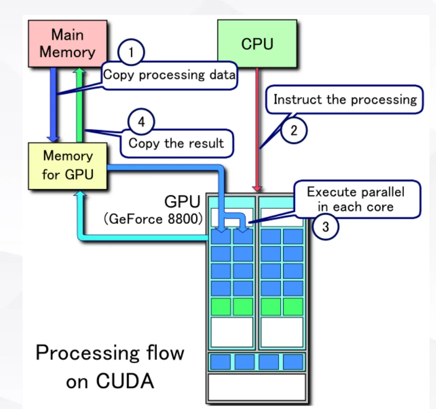
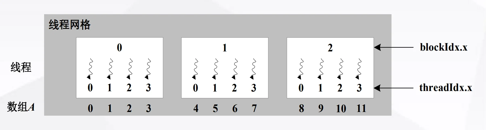
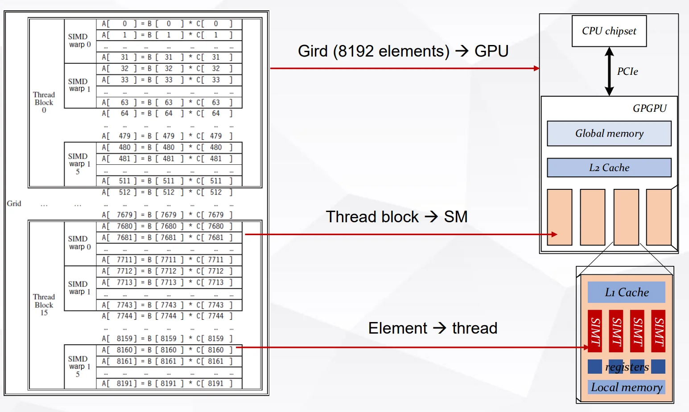
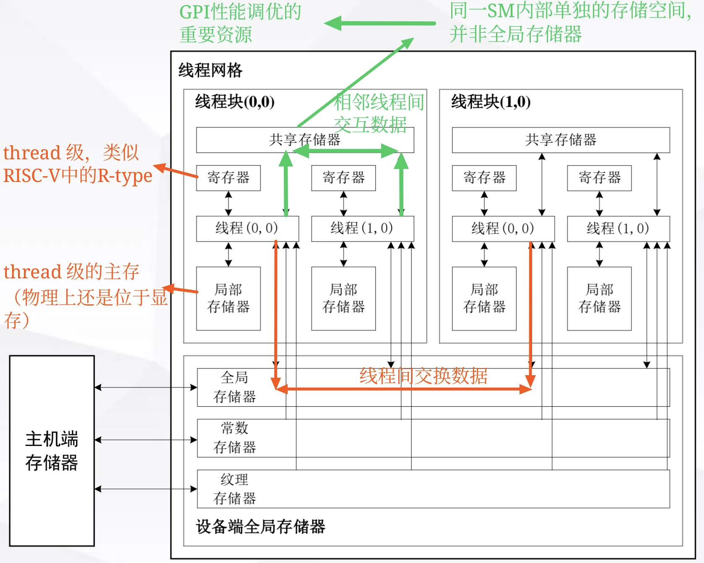
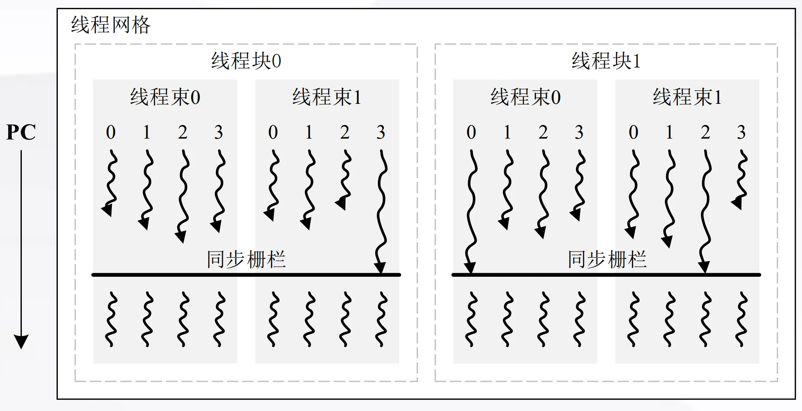
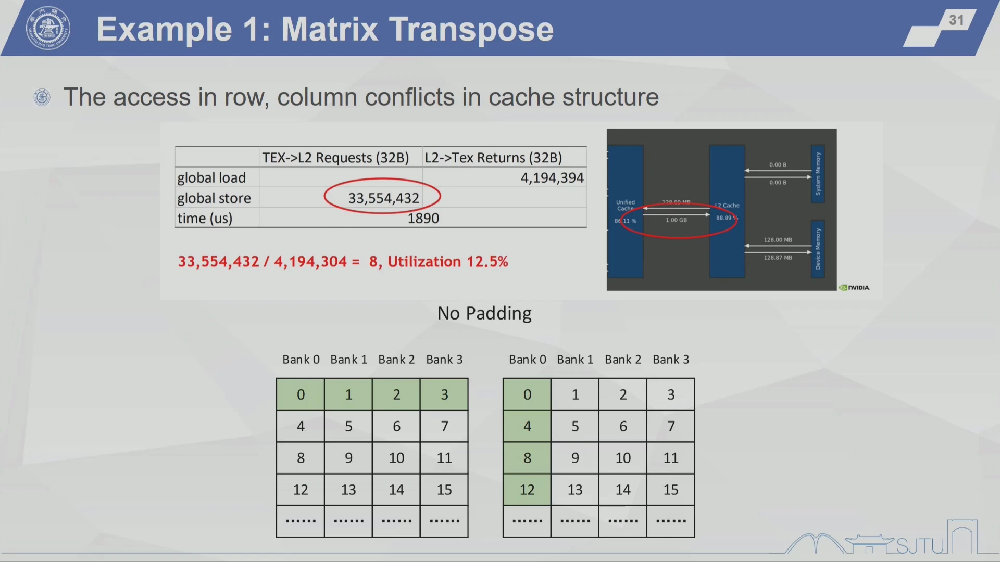
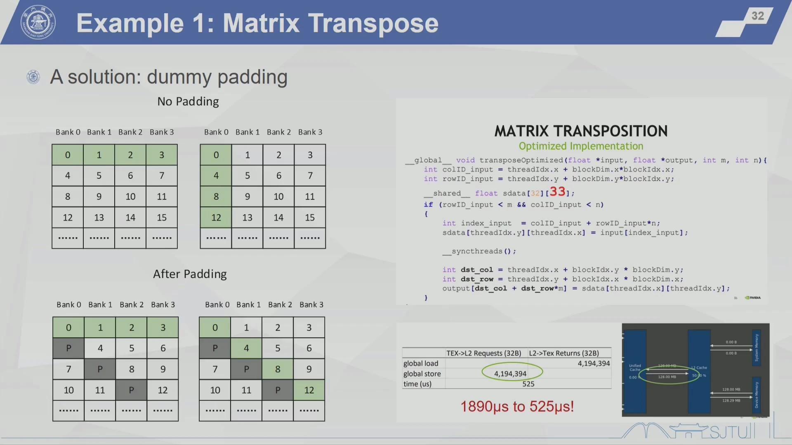
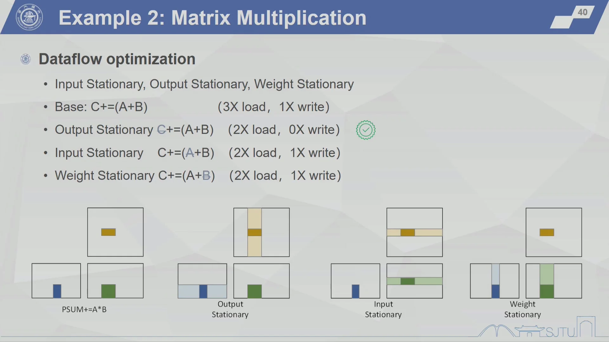
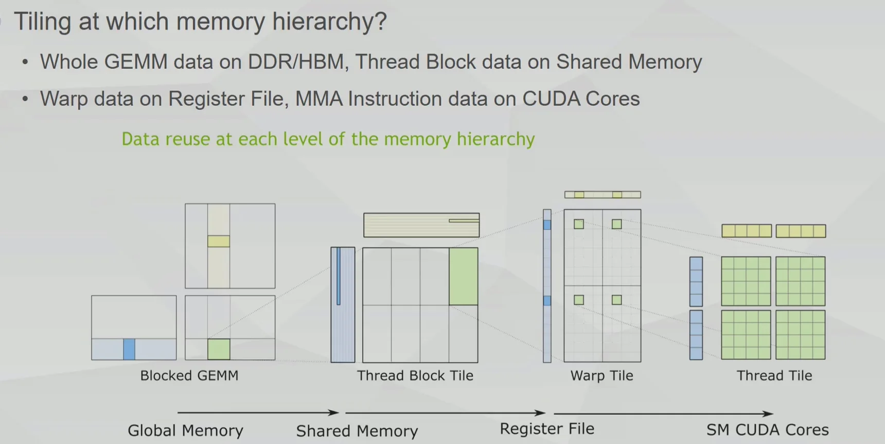
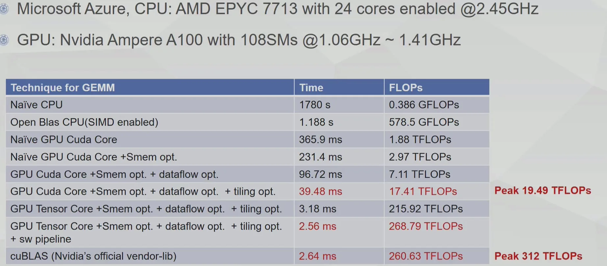

Programming Model¶
I. Programming Model Overview¶
1.1 History¶
- 2001/2002, researchers see GPU as data parallel coprocessor, the GPGPU field is born
- 2007, NVIDIA releases CUDA
- CUDA – Compute Unified Device Architecture
- 统一计算设备架构
- GPU shifts to GPGPU for computing
- Graphics 编程 → General-Purpose 编程
- 2008, Khronos releases OpenCL specification
1.2 GPGPU Programming Model¶
一个编程模型应该包含：
- How to compute the wanted function
- 如何组织 memory 为计算服务
- How to map the function to the real hardware
此外，对于并行架构，尤其重要的是：
- How to divide the workload（如何划分工作量）
- How to communicate between the divided work（如何在划分的工作之间进行通信）
- How to synchronize the divided work（如何同步划分的工作）
也就是说，GPGPU programming model 要能说明：在每一个时刻，每个 SM 中的每个 CUDA Core 应该做什么。
II. NVIDIA Programming Model: CUDA¶
2.1 Computing Model¶
CUDA 使用的是异构计算（heterogeneous computing）模型：程序员写出的 GPGPU 应用程序会被分成两类代码：
- Host code：运行在 CPU 上的主机端代码
- Device code：运行在 GPGPU 上的设备端代码
从程序员视角看，一次典型 CUDA 执行流程如下：
- CPU 先把 processing data 从 main memory 拷贝到 GPU memory
- CPU 发出指令，告诉 GPU 要执行什么并行计算
- GPU 在多个 core 上并行执行
- 计算结果再从 GPU memory 拷回 main memory

CPU 通过 kernel 来调用 GPU。kernel 在 CUDA 的线程层级中也可以理解为一个 thread grid：
CPU: __host__：指定代码在 CPU 上做CUDA: __global__：定义从 host 启动、在 device 上执行的 kernelCUDA: __device__：定义在 device 端调用、在 GPU 上执行的函数
注意，逻辑执行与 GPU 硬件的映射关系是：
kernel (grid)(线程网格) \(\rightarrow\) GPUthread block(线程块) \(\rightarrow\) SMthread(线程) \(\rightarrow\) SP / CUDA Core（逻辑对应，实际执行以warp(线程束) 为调度单位）
kernel launch 的基本写法是：
其中：
dimGrid：一个 grid 里有多少个 thread blockdimBlock：一个 thread block 里分配多少个 thread
例如向量逐元素相乘：
这里的含义是：把 8192 个元素划分成 16 个 thread block，每个 thread block 有 512 个 thread。也可以换成其他满足总线程数需求的配置（例如手写标注中写到的 8 x 1024），但实际可行的 dimBlock 会受硬件最大线程数、寄存器、shared memory 等资源限制。
2.2 Thread Model¶
2.2.1 Thread Hierarchy¶
CUDA 的线程层级是：
- Grid：线程网格
- Thread block：线程块
- Thread：线程
对应到程序里的内置变量：
gridDim(x, y, z)：一个 grid 中 block 的维度，也就是“一个 grid 有几个 block, \(x,y,z\)的 范围是多少”blockDim(x, y, z)：一个 block 中 thread 的维度，也就是“一个 block 有几个 thread, \(x,y,z\)的 范围是多少”blockIdx(x, y, z)：当前 thread 所在 block 的编号，也就是“当前 thread 在 grid 中的 block 编号”threadIdx(x, y, z)：当前 thread 在 block 内部的本地编号
2.2.2 Example¶
Example 1: 数组元素按照线程分配¶
如果只看一维数组（即假设所有层次均是一维网格），最常用的全局下标计算方式是：
这句话可以拆成：
blockIdx.x * blockDim.x：前面已经经过了多少个完整 blockthreadIdx.x：当前 thread 在本 block 内的本地编号- 两者相加得到当前 thread 对应的一维全局下标

__global__ void kernel1(int* A) {
int index = threadIdx.x + blockIdx.x * blockDim.x;
A[index] = index;
}
// kernel1 结果：0 1 2 3 4 5 6 7 8 9 10 11
__global__ void kernel2(int* A) {
int index = threadIdx.x + blockIdx.x * blockDim.x;
A[index] = blockIdx.x;
}
// kernel2 结果：0 0 0 0 1 1 1 1 2 2 2 2
__global__ void kernel3(int* A) {
int index = threadIdx.x + blockIdx.x * blockDim.x;
A[index] = threadIdx.x;
}
// kernel3 结果：0 1 2 3 0 1 2 3 0 1 2 3
复习时可以这样记：
index是全局连续编号blockIdx.x在同一个 block 内相同threadIdx.x在每个 block 内从 0 重新开始
Example 2: Vector Multiplication¶
向量逐元素相乘的例子是：
__global__ void vect_mult(int n, double *a, double *b, double *c)
{
int i = blockIdx.x * blockDim.x + threadIdx.x;
if (i < n) {
a[i] = b[i] * c[i];
}
}
host code 调用：
这个配置的含义是：
- Grid：8192 elements -> 8192 threads
- 16 thread blocks
- 每个 thread block 有
8192 / 16 = 512threads
注意 if (i < n) 的含义：如果元素数不是线程数的整数倍，例如只有 8191 个元素，但是我们依旧会按照 \(16\times 512=8192\) 分配，最后多出来的 thread 会因为这句判断而不访问数组，从而防止越界。
当硬件资源不够时会发生什么？
例如每一个 SM 只有 32个 SP？
——需要时分复用！
\(512/32 = 16\) warps，因此会构建 16 个 warp(线程束)。每一个时刻独立执行 1 个 warp，其他 warp 处于等待状态，等当前 warp 执行完毕后再切换到下一个 warp。
Thread mapping to hardware

Example 3: Matrix-Vector Addition¶
课件的第二个 CUDA 例子是矩阵加向量广播：
指定划分方式：
- 每个 Thread Block 负责一个 \(H\times W = 128\times 32\) 的 tile
- 每个 tile 由
threadsPerBlock(16, 8)个 thread 处理 - 因此：每个 thread 计算 \((32/16) \times (128/8) = 2 \times 16\) 个元素
device code 的关键下标计算是：
int row_start = blockIdx.y * blockDim.y * 16 + threadIdx.y * 16;
int col_start = blockIdx.x * blockDim.x * 2 + threadIdx.x * 2;
(1) 拆解：每一个 thread 处理 16 行数据，
blockDim.y是一个 thread block 的 thread 的行数，blockIdx.y是当前 block 在 grid 中的行编号。blockIdx.y * blockDim.y * 16就表示当前 thread block 的起始行号，threadIdx.y * 16表示当前 thread 在 block 内的行偏移。
(2) 列的计算同理。
然后每个 thread 用两层循环完成自己的 [2, 16] 小块：
for (int i = 0; i < 16; ++i) { // 16 rows
int row = row_start + i;
if (row < numRows) {
for (int j = 0; j < 2; ++j) { // 2 columns
int col = col_start + j;
if (col < numCols) {
matrix[row * numCols + col] += bias[col];
}
}
}
}
这里的 if (row < numRows) 和 if (col < numCols) 是为了处理边界情况：当矩阵的行数或列数不是 128 或 32 的整数倍时，最后一个 tile 会有一些线程对应的行或列超出矩阵范围，这些线程就不进行计算。
host code 中的配置是：
dim3 threadsPerBlock(16, 8);
dim3 blocksPerGrid((numCols + 31) / 32,
(numRows + 127) / 128);
matrixAddBiasLargeTile<<<blocksPerGrid, threadsPerBlock>>>(
d_matrix, d_bias, numRows, numCols
);
这里 (numCols + 31) / 32 和 (numRows + 127) / 128 是向上取整。例如：如果 numCols = 63，应该划分为两列线程块，普通整数除法 63 / 32 = 1 会少算一块，但 (63 + 31) / 32 = 2，正好覆盖剩余列。
2.3 Memory Model¶
2.3.1 GPGPU 中的 Memory Hierarchy¶
Memory model 的基本思想是：根据数据的访问需求选择合适的存储层次，尽量减少对 global memory 的访问。

当前 CUDA memory model 中常见的类型包括：
- Register file：寄存器文件，每个 thread 私有，速度最快，用来放线程内部的临时变量
- Local memory：局部存储器，每个 thread 私有；名字叫 local，但物理上通常仍在设备端全局存储器中，只是逻辑上属于某个 thread
- Shared memory：共享存储器，同一 thread block 内线程共享，位于同一 SM 内部的单独存储空间，并非全局存储器
- L1 data cache：类似之前 RISC-V 处理器中学过的 Cache，由硬件管理
- Global memory：设备端全局存储器，所有 thread 都能访问，但访问代价高
- Constant memory：常量存储器，物理上也在设备端全局存储器中，适合只读常量数据
- Texture memory：纹理存储器，物理上也在设备端全局存储器中，有专门的缓存/访问路径
注意关注Shared memory：
- 是 GPGPU 性能调优的重要资源
- 它由程序员显式控制，而不是像 cache 一样完全交给硬件
- 它可以服务于同一个 block 内线程之间的数据复用和通信
- 某些架构中，L1 cache 和 shared memory 会共享片上空间，可以动态调整划分；如果程序员愿意主动优化，就可以把更多片上资源作为 shared memory 使用，从而写出更高性能的 CUDA 程序
2.3.2 TLP 和资源限制¶
TLP（Thread-Level Parallelism）可以理解为：一个 SM 上能同时驻留、随时可被调度的 thread / warp / thread block 有多少。TLP 越高，SM 越容易在某些 warp 等待 memory 或长延迟指令时，切换去执行别的 warp，从而隐藏延迟。
注意：“驻留” 的含义是一个 thread block / thread 的运行上下文已经被分配到某个 SM 上，占用了这个 SM 的寄存器、shared memory、warp slot 等资源，等待或正在被调度执行。
关键点是：驻留并不等于正在执行。
但是，TLP 不是只由 kernel launch 时写了多少 thread 决定。一个 SM 能同时容纳多少工作，还会被以下因素限制：
# threads：一个 SM 最多能驻留多少 thread# thread blocks：一个 SM 最多能驻留多少 thread blockSize of register file：每个 thread 使用越多 register，可同时驻留的 thread 越少Size of shared memory：每个 block 使用越多 shared memory，可同时驻留的 block 越少
Example 1: V100 的资源限制¶
以课件中的 V100 / Volta GV100 为例：
- 每个 SM 最多
2048 threads - 每个 SM 最多
32 thread blocks - 每个 SM 有
256KB register file - 每个 SM 有最多
96KB shared memory
注意：课件里写的 256KB RF 是寄存器文件容量。因为一个 register 通常是 32-bit，也就是 4B，所以：
如果希望 SM 同时驻留满 2048 threads，平均每个 thread 能分到的 register 数量就是：
所以课件标注中的结论是：
- More regs needed, then less threads
- 如果一个 thread 需要超过 32 个 register，那么 V100 上这个 SM 就很难同时驻留满 2048 个 thread
shared memory 的思路类似。如果一个 SM 最多驻留 32 blocks，并且 shared memory 总量是 96KB，那么平均每个 block 只能用：
所以另一个结论是：
- More shm needed, then less blocks
- 如果一个 block 需要超过 3KB shared memory，那么一个 SM 上就不能同时驻留满 32 个 block
Example 2¶
课件中的具体 kernel 例子：
分别看三个主要限制：
(1) Register file 限制
每个 SM 的 RF 数量固定，每个 thread 分配的 RF 数 VS 可驻留的 thread 数
也就是说，如果每个 thread 要用 64 个 register，那么 register file 最多支持 1024 个 thread 同时驻留；每个 TB 有 128 个 thread，因此最多驻留 8 个 TB。
(2) Shared memory 限制
每个 SM 的 shared memory 总量固定，每个 block 分配的 shared memory VS 可驻留的 thread block 数
如果每个 TB 需要 8KB shared memory，那么 shared memory 最多支持 12 个 TB 同时驻留。
(3) 最大线程数限制
SM 限定的最大 TB 数 VS SM 限定的最大 thread 数以及每个 TB 的 thread 数
如果只看最大线程数，每个 SM 最多可以驻留 16 个这样的 TB。
最终一个 SM 上能驻留多少个 TB，要取所有限制中的最小值：
因此这个 kernel 在 V100 上的驻留 TB 数量由 register file 卡住，而不是由 shared memory 或最大线程数卡住。这个例子说明：写 CUDA kernel 时，
- 每个 thread 用太多 register 会降低可驻留 thread 数；
- 每个 block 用太多 shared memory 会降低可驻留 block 数；
- 两者都会降低 TLP。
2.4 Synchronization¶
并行程序需要同步，是因为多个 thread 之间经常存在数据依赖：一个 thread 先写入 shared memory，另一个 thread 后续要读取这个结果。如果没有同步，后读的 thread 可能在数据还没写完时就开始读取，得到旧值或未定义值。
2.4.1 Thread block 内同步¶
CUDA 中最基础的同步方式是 block scope 内的同步：
__syncthreads() 的含义是：同一个 thread block 内的所有 thread 都必须到达这个同步点，之后这些 thread 才能继续向下执行。下图里画的同步栅栏（barrier）就是这个意思：先到的 warp / thread 会在 barrier 前等待，直到 block 内其他 thread 也到达。

需要注意它的作用域：
__syncthreads()只能同步同一个 thread block 内部的 thread- 它不能同步不同 thread block，因为不同 block 可能被调度到不同 SM 上，甚至不一定同时驻留
- 对应到底层实现，可以理解为 CUDA 编译到类似
bar的同步栅栏指令
下面的矩阵乘法片段展示了为什么 shared memory 常常需要和同步一起使用：
__shared__ float Mds[BLOCK_SIZE][BLOCK_SIZE];
__shared__ float Nds[BLOCK_SIZE][BLOCK_SIZE];
Mds[tx][ty] = d_A[row * N + ty + i * BLOCK_SIZE];
Nds[tx][ty] = d_B[col + (tx + i * BLOCK_SIZE) * K];
__syncthreads();
这里每个 thread 负责把一部分 A 和 B 从 global memory 搬到 shared memory。只有当 block 内所有 thread 都完成搬运之后，后面的计算：
才可以安全读取完整的 tile。因此第一处 __syncthreads() 是为了保证 shared memory 中的 Mds 和 Nds 已经被整个 block 填好。
代码中第二处同步：
它强调的是：当多个 thread 共享同一块 shared memory，并且后续迭代可能复用或覆盖这些 shared memory 数据时，需要通过同步保证所有 thread 的读取和写入阶段不会交错。更常见的 tiled matrix multiplication 写法通常是在完成整个 j 循环之后、进入下一轮 tile 加载之前同步一次，避免下一轮加载覆盖当前轮还没读完的数据。
2.4.2 其他作用域的同步¶
除了 block 内同步，CUDA 还提供 host 端看到的更大作用域同步：
cudaDeviceSynchronize()：等待当前 device 上前面提交的工作完成。它是 device 级别的 host-device 同步，常用于 kernel launch 之后检查错误、计时或确保结果已经完成。cudaStreamSynchronize(stream)：等待指定 stream 中前面提交的工作完成。它只同步某一个 stream，相比cudaDeviceSynchronize()作用域更小，更适合保留其他 stream 的并发执行。
III. Summary of Thread Model¶
3.1 SIMD vs. SIMT¶
总结 GPGPU thread model 和传统 SIMD 编程模型的差异：
- SIMD：one thread + parallel OPs
- SIMT：many threads + scalar OPs
SIMD：一个线程，一条向量指令处理多个元素¶
以 ARM NEON 的向量乘法为例：
for (i = 0; i < n; i += 4) {
uint32x4_t a4 = vld1q_u32(a + i);
uint32x4_t b4 = vld1q_u32(b + i);
uint32x4_t c4 = vmulq_u32(a4, b4);
vst1q_u32(c + i, c4);
}
从程序控制流上看，这仍然是一个 thread 在执行循环；只是每次循环使用 uint32x4_t 这样的向量类型，一次处理 4 个元素。因此 SIMD 的思路是：让一个线程发出一条“向量操作”，硬件的多个 lane 同时完成多个元素的计算。
手写标注里的“一次操作 4 个元素；从程序上还是一个 thread，但是一次处理多个元素”就是这个意思。
SIMT：多个线程，每个线程写标量代码¶
CUDA 的写法是：
// host code
int nblocks = (n + 511) / 512; // 512 threads per Thread Block
vect_mult<<<nblocks, 512>>>(n, a, b, c);
// device code
__global__ void vect_mult(int n, double *a, double *b, double *c)
{
int i = blockIdx.x * blockDim.x + threadIdx.x;
if (i < n) {
a[i] = b[i] * c[i];
}
}
在 SIMT 中，程序员写的是每个 thread 要做的标量操作：每个 thread 根据自己的 blockIdx.x 和 threadIdx.x 算出一个 i，然后只负责 a[i] = b[i] * c[i] 这一份工作。硬件再把多个 thread 组成 warp，让它们以类似 SIMD 的方式一起发射执行。
所以可以这样对比：
| 模型 | 程序员看到的执行主体 | 一次操作覆盖多少数据 | 例子 |
|---|---|---|---|
| SIMD | 一个 thread / 一个控制流 | 一条向量指令处理多个元素 | uint32x4_t 一次处理 4 个元素 |
| SIMT | 很多 thread | 每个 thread 写标量操作，硬件把多个 thread 组成 warp 执行 | CUDA 中一个 thread 处理一个 a[i] |
SIMT 的几个重要特点¶
(1) Address scattering
SIMT 中每个 thread 都有自己的 threadIdx / blockIdx，因此可以算出不同地址。它们不一定非要访问连续地址，可以比较自然地支持分散地址访问。
这就是 Address scattering：不同线程可以负责不同数据位置，甚至负责不同任务。相比要求固定向量宽度和规则连续访问的 SIMD，SIMT 在表达不规则并行任务时更灵活。
(2) Thread divergence
SIMT 中每个 thread 逻辑上是独立线程，因此可以写：
这类条件分支。比如最后一个 thread block 里，可能有的 thread 满足 i < n，有的 thread 不满足，这就是一种线程发散。
但是要注意：线程发散是“表达能力”的好处，也是“性能”上的潜在代价。同一个 warp 内的 thread 如果走不同分支，硬件通常需要用掩码分别执行不同路径，最后再汇合；因此发散越严重，warp 的有效并行度越低。
(3) Number of instructions in ISA
SIMD 往往需要暴露不同宽度、不同类型的向量指令或向量类型，例如 .4s、.4d 这类扩展含义。SIMT 则可以让程序员写标量指令，硬件用 thread / warp 机制来组织并行。
因此，SIMT 的一个好处是：ISA 不一定需要为每种向量宽度设计很多显式向量指令，程序员也不用在代码里直接操心“一条指令一次算几个元素”。并行度主要通过 thread 数量、thread block 数量和硬件调度来体现。
3.2 Hierarchical Thread Model: Thread Block¶
为什么 CUDA thread model 中需要 thread block 这一层？
它不是随便多加的抽象，而是在 programmability、hardware complexity、scalability 之间做平衡。
CUDA 的层级可以简化为：
后来的 Hopper 架构又引入了更高一级：
为什么需要 Thread Block？¶
(1) 为了提供 shared memory 和 block 内协作
Thread block 是 shared memory 的作用域：同一个 thread block 内的 thread 可以通过 shared memory 交换数据，并通过 __syncthreads() 做 block 内同步。
如果缺少 thread block 这一层，模型只有：
那么线程之间交换数据就很难有一个“中间层”的片上共享空间，只能更多借助 global memory。global memory 延迟高、带宽代价大，通信成本会明显上升。
(2) 降低通信成本：以 reduction 为例
Cooperation between threads,
e.g. reduction mapped on large-scaled hardware,
reduce the communication cost
以 reduction 为例，假设要对很多元素求和。比较好的方式不是让所有 thread 都直接去 global memory 里频繁写同一个结果，而是：
- 每个 thread block 先负责一段数据
- block 内 thread 把数据加载到 shared memory
- 在 shared memory 中做局部 reduction
- 每个 block 最后只把一个 partial sum 写回 global memory
- 再用后续 kernel 或更高层级继续合并 partial sums
这样大量 thread 间通信发生在 shared memory 内，而不是都通过 global memory 完成，所以通信成本更低。
(3) 让线程数量更灵活，提高 TLP
程序员通常会启动比 SM 数量更多的 thread blocks。硬件把这些 thread blocks 动态分配到 SM 上执行：
- 如果 GPU 的 SM 少，就分批执行这些 thread blocks
- 如果 GPU 的 SM 多，就可以同时执行更多 thread blocks
- 同一个程序不需要强依赖具体 GPU 有多少个 SM
即 “无需感知不同 GPU 中 SM 数量的灵活调度”：顶层按 thread block 为单位分配任务，程序员不用为不同 GPU 的 SM 数量重写任务划分。
以 block 为单位调度，更适合大规模硬件。thread block 是调度到 SM 的基本单位。相比直接按单个 thread 调度，按 block 调度有两个好处：
- 任务粒度更合适，不需要硬件管理海量单个 thread 的全局调度
- 一个 SM 可以驻留多个 block，当一个 block / warp 因长时间访存无法继续时，SM 可以切换去执行另一个 resident block / warp，从而隐藏延迟
如果顶层直接按 thread 分配任务，硬件调度压力会很大；如果只按整个 grid 分配任务，又缺少可拆分、可迁移、可复用的中间任务粒度。thread block 正好承担了这个中间层。
Thread Block Cluster¶
当硬件规模继续增长，只靠单个 SM 内部的 thread block 协作可能不够。一些程序需要在更大的范围内交换数据，这个范围可能超过单个 SM 的物理范围。
因此 Hopper 引入了 thread block cluster：
- cluster 位于 grid 和 thread block 之间
- cluster 中包含多个 thread blocks
- cluster 内不同 SM 之间可以有更快的通信通道
- 它扩展了“可协作线程集合”的范围，同时仍然保持层级化编程模型
可以把它理解为：thread block 解决的是一个 SM 附近的线程协作；thread block cluster 进一步解决的是多个 SM 之间的协作。
3.3 Summary¶
GPGPU thread model 的核心价值可以总结为：
- 用 SIMT 让程序员写“每个线程做什么”的标量代码，而不是手动写很多向量宽度相关的 SIMD 指令
- 用
grid -> thread block -> thread的层级，把庞大的并行任务拆成硬件容易调度的单位 - 用 thread block 提供 shared memory 和 block 内同步，降低线程协作的通信成本
- 用大量 thread blocks 适配不同规模的 GPU，提高 TLP 并隐藏访存延迟
- 在硬件继续扩大时，用 cluster 扩展跨 SM 协作能力
IV. Performance Tuning with Programming Model¶
4.1 Example 1: Matrix Transpose¶
矩阵转置是一个非常常见、看起来也很简单的操作：
如果矩阵按 row-major 存储，输入矩阵中 (row, col) 的下标是：
转置后的输出下标是：
也就是说，一个 thread 读入 input[row][col]，再写到 output[col][row]。
Naive implementation 的问题
naive 版本看起来很直接：每个 thread 负责一个元素，计算输入和输出下标，然后完成一次读和一次写。理论上，如果矩阵大小是 m = 8192, n = 4096，元素是 float：
总 IO 大约是 256 MB。如果显存带宽约为 600 GB/s，理想时间大约是：
但课件中的 naive 版本实际跑到了约 1890 us，明显慢于理想值。

原因不在计算本身，而在访存模式：
- 读 input 时，warp 中相邻 thread 通常读相邻地址，global load 比较连续
- 写 output 时，由于是转置写入，相邻 thread 可能写到相隔很远的地址，global store 变成 stride / scattered access
- 这种行、列访问方向不一致，会在 cache / memory transaction 上产生冲突和低利用率
课件里的指标显示：
也就是说，store 侧请求数量膨胀到理想情况的 8 倍，有效利用率只有 12.5%。这个例子想说明：矩阵转置不是算得慢，而是访存模式拖慢了性能。
优化思路：用 shared memory 做 tile¶
Programming Model 给我们的优化工具是 thread block 和 shared memory。可以让一个 thread block 负责一个小 tile：
- 先让 thread block 中的 thread 从 global memory 连续读取一个 tile
- 把 tile 放到 shared memory 中
- 在 shared memory 中完成转置
- 再把转置后的 tile 连续写回 global memory
这样做的核心思想是：把“全局内存中的不规则转置访问”拆成“global memory 连续读写 + shared memory 内部重排”。global memory 访问更规整，性能就会好很多。
Dummy padding¶
但是 shared memory 自己也有 bank。若直接使用 32 x 32 的 shared memory tile，转置访问时可能让多个 thread 落到同一个 bank，形成 bank conflict。
课件给出的解决方式是 dummy padding：
这里不是因为需要真正存 33 列有效数据，而是故意多加一列 padding，使每一行的起始地址错开。这样在按列方向读取 shared memory 时，thread 访问会分散到不同 bank，减少冲突，实现 Bank Parallelism。

优化后，课件里的 global store 请求从 33,554,432 降到 4,194,394，时间从：
这已经比较接近前面估算的理想访存时间 409.6 us。
4.2 Example 2: Matrix Multiplication¶
第二个例子是 GEMM（General Matrix Multiplication），也就是矩阵乘法：
其中 K 是 reduction axis。对每个输出元素：
GEMM 在深度学习和 LLM 里非常常见。
这一节不是要深究每一版 kernel 的代码，而是看一个核心问题：怎样根据 GPGPU programming model，把同一个 GEMM 映射到不同层级的硬件资源上，从而逐步提升性能。
从 naive 到 GPU kernel¶
最朴素的 CPU 版本就是三层循环：
for (int i = 0; i < M; ++i) {
for (int j = 0; j < N; ++j) {
float sum = 0.0f;
for (int k = 0; k < K; ++k) {
sum += A[i * K + k] * B[k * N + j];
}
C[i * N + j] = sum;
}
}
它直接表达了数学定义，但没有充分利用并行硬件。GPU naive 版本通常让一个 thread 负责一个 C[row, col]，thread 内沿 K 方向做 reduction。这样已经能把大量输出元素并行起来，但性能仍然离 A100 的峰值很远，因为每个 thread 都反复从 global memory 读 A 和 B，数据复用没有做好。
Shared memory optimization：减少重复访问 DDR/HBM¶
矩阵乘法的关键在于复用：
- 同一块
Atile 会被多个C元素使用 - 同一块
Btile 也会被多个C元素使用
如果每个 thread 都直接从 DDR/HBM 读自己需要的数据，就会产生大量重复访问。shared memory 优化的基本思想是：
- 一个 thread block 负责一个
C的 tile - 先把对应的
Atile 和Btile 从 global memory 搬到 shared memory - block 内多个 thread 反复使用 shared memory 中的数据
- 算完当前 tile 后，再进入下一段
Ktile
没有 shared memory 优化时，A 和 B 会从 DDR 中被重复读多次；使用 shared memory 后，global memory 只负责把 tile 搬进来一次，后续复用发生在 shared memory 中。
这对应我们前面学过的 memory model：让高复用数据尽量停留在更靠近计算单元的存储层级里。
Dataflow optimization：让谁 stationary¶
dataflow optimization 关注的是：在计算 C += A * B 的过程中，应该让哪一类数据尽量停留在片上，减少搬运。
课件列了几种思想：
- Output Stationary：让部分和
C尽量留在寄存器 / 片上，累加完成后再写回 - Input Stationary：让输入
A尽量停留，被多个计算复用 - Weight Stationary：让权重
B尽量停留，被多个计算复用

GEMM 中常见且自然的方式是 output stationary：每个 thread / warp 维护一小块 C 的 partial sum，把累加值留在 register file 中，直到 K 方向累加完成后再写回 global memory。这样可以减少对 C 的反复读写。
这个思想和神经网络加速器里常讲的 dataflow 是同一类问题：不是只关心算多少次乘加，还要关心数据在哪一级存储里停留、什么时候移动、被复用多少次。
Tiling：把 GEMM 映射到 memory hierarchy¶
GEMM 调优的核心形态是多级 tiling：

可以按硬件层级来理解：
- 整个 GEMM 数据放在 DDR/HBM，也就是 global memory
- Thread block 负责较大的 tile，并把对应数据搬到 shared memory
- Warp 负责更小的 warp tile，数据进入 register file
- Thread / MMA instruction 负责更小的 thread tile，最终送到 CUDA cores / Tensor Cores 执行
这张图的重点是：每一级 memory hierarchy 都承担一个 tile，每一级都尽量做数据复用。
所以 GEMM 的调优不是简单地“开更多 thread”，而是要设计：
- 一个 block 算多大的
Ctile - 每次搬多大的
A/Btile 到 shared memory - 一个 warp 负责 tile 中的哪一块
- 每个 thread 在 register 中维护多少个 partial sums
- 数据搬运和计算能不能重叠
Tensor Core 和 software pipeline¶
当使用 Tensor Core 时，单次矩阵乘加的算力会大幅提高。课件中 half-float 的 Tensor Core 版本性能远高于普通 CUDA Core 版本。
但是算得越快，越容易暴露 memory access time：如果数据搬运跟不上，Tensor Core 就会等待数据，产生 stall。因此后面需要 software pipeline 这类技术，让不同阶段重叠：
- 当前 tile 正在计算
- 下一批数据同时从 global memory 搬到 shared memory
- shared memory 中的数据再继续搬到 register
这和前面 memory hierarchy 的思想是一致的：让数据提前到位，让计算单元尽量不断粮。
Performance progression¶

- naive CPU 很慢
- OpenBLAS CPU 通过 SIMD 等优化大幅提升
- naive GPU 已经快很多，但离峰值还有距离
- 加入 shared memory、dataflow、tiling 后，CUDA Core 版本逐步接近 CUDA Core 峰值
- 换用 Tensor Core 后，性能跨到更高量级
- 再加入 software pipeline 后，性能进一步接近 cuBLAS
这个例子的重点可以压缩成一句话：
GEMM 性能调优的本质，是把数据复用按
global memory -> shared memory -> register file -> compute cores逐层安排好，并让计算和搬运尽量重叠。